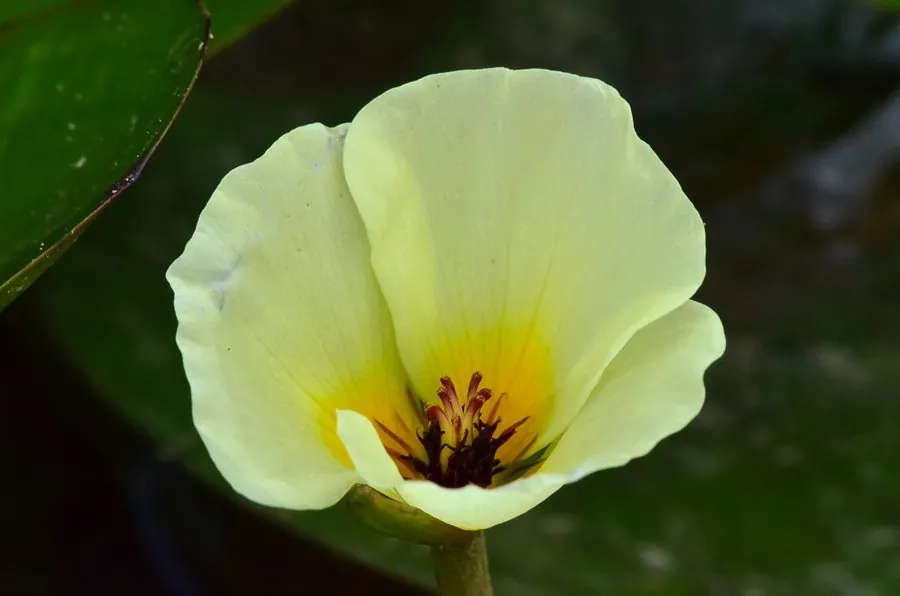

水生植物 · 植物界
水罂粟 Hydrocleys nymphoides

泽泻科水罂粟属多年生浮叶水生植物，叶片心形浮水，花黄色如罂粟，原产南美，是常见的热带水景花卉。
- 分类
- 门被子植物门纲木兰纲目泽泻目科泽泻科属水罂粟属
- 栖息环境
- 热带、亚热带池塘与沼泽的浅水区，喜温暖静水
- 地理分布
- 原产南美洲，中国南方及世界各地水景中引种栽培
- 保护级别
- 暂无评估
物种志
水罂粟为泽泻科水罂粟属的多年生水生草本，茎细长，节间生不定根。叶片浮于水面，心形或卵形，长 5–10 厘米，表面亮绿色，有光泽，叶柄长而柔软。花单生，挺出水面，黄色，花瓣 3 枚，直径 4–6 厘米，花心带橙红色，花期夏季至秋季；果实为蓇葖果。
水罂粟原产南美洲的热带和亚热带地区，喜阳光充足、温暖静水和肥沃的塘泥，适宜水深 20–50 厘米，不耐寒。它叶片浮水、花黄色艳丽，形似罂粟，是热带水景中常见的观赏植物，常与睡莲搭配种植。栽培以分株和扦插繁殖为主，生长季需保持充足光照和水分；在温暖地区逸生后可能大量繁殖，需注意控制。
形态与习性
- 株高花葶挺出水面 10–20 厘米
- 叶片心形浮水，长 5–10 厘米
- 花期夏季至秋季，花黄色
- 水深适宜水深 20–50 厘米
- 光照喜充足阳光
- 土壤肥沃的塘泥
- 繁殖分株、扦插
- 注意温暖地区逸生需控制
趣味知识
- 水罂粟的花黄色、花瓣 3 枚，形似罂粟，因此得名。
- 它原产南美，喜热怕冷，在中国北方需温室越冬。
- 水罂粟在温暖地区逸生后可能大量蔓延，需控制种植。